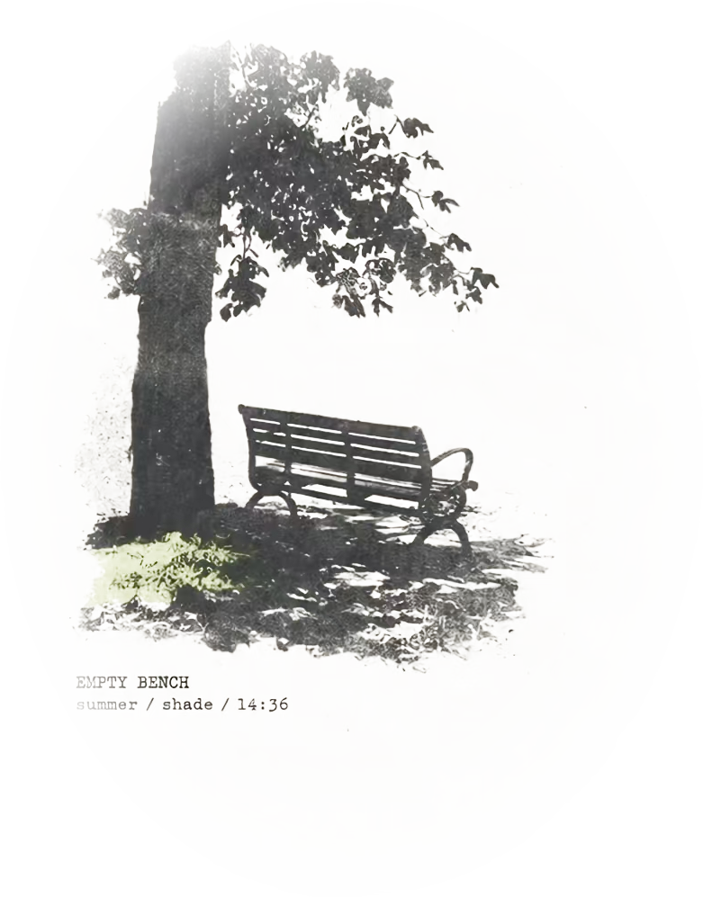

全部藏书
导入时间
书名
作家
最近打开
自定义

阅读器
0%
载入中...
未保存
0 字
章节合同
合同由写作助手在起草前写下：这一章要做什么、不能做什么。
差异
解决冲突
加载中...
作者简介
作者时间轴
作者档案
作者档案
阅读历程
点击左侧的书籍查看笔记
个性化
身份与外观会自动保存，外观在右侧实时预览。
身份
正在读取灵魂文稿…
我
外观
交互页
对话气泡的字号与颜色
#9a8e7a
#ffffff
#b45a2d
1.00
1.0
笔记浮窗
阅读页笔记面板的字号
正在读取上次阅读…
正在读取最近会话…
正在读取本书笔记…
个性化定义
SOUL.md
已保存
切换即时生效，无需重启。点击槽位卡可筛选对应能力的连接档案；未绑定的槽位沿用 .env 配置（只读继承）。
留白
留白加载中...
选一种读法 · 开始对话后固定
选一种写法 · 开始对话后固定
引用书中: